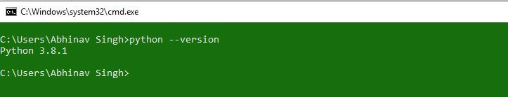
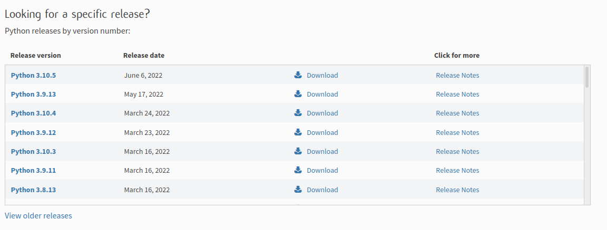
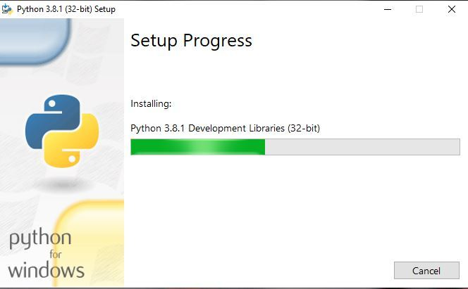
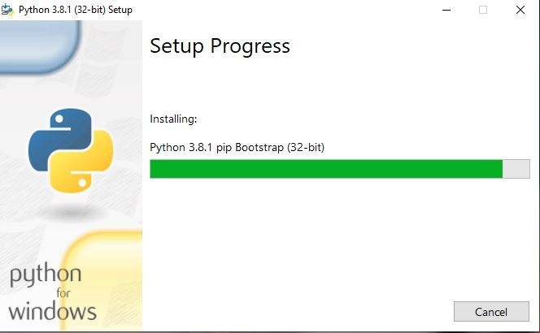
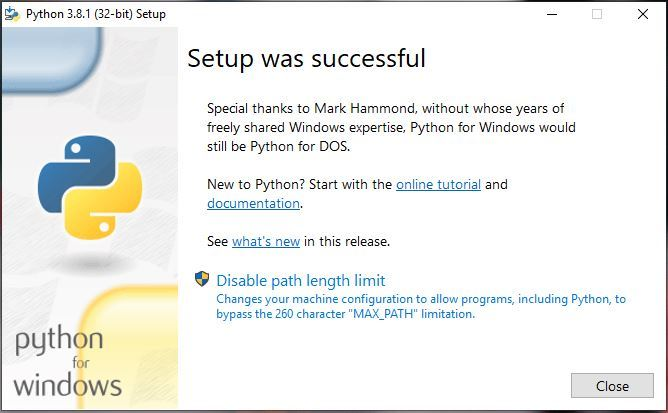
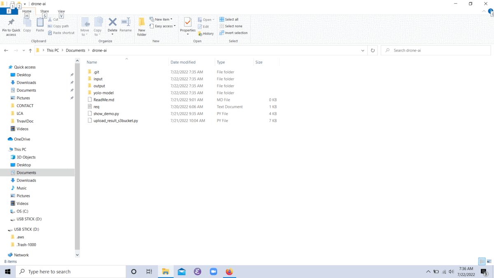

Drone-AI Demo
Table of Contents
Install Python in Windows
Check if Python and pip is already installed
- To check if your device is pre-installed with Python or not,
- Go to the Command line(search for cmd in the Run dialog( Win + R))
Now run the following command:
python --version pip –V
If Python is already installed, it will generate a message with the Python version available.

Installing Python on Windows takes a series of few easy steps.
Step 1 − Select Version of Python to Install Step 2 − Download Python Executable Installer Step 3 − Run Executable Installer
Select Version of Python to Install
- Python has various versions available with differences between the syntax and working of different versions of the language.
- We need to choose the version which we want to use or need.
- There are different versions of Python 2 and Python 3 available.
- In the official site python:download we can choose the latest version
python 3.10.5

Download Python Executable Installer
In python 3.10.5 there are various available executable installers shall be visible with different operating system specifications.
Choose the installer which suits your system operating system and download the instlaller
In python 3.10.5 below Files Setion
- Select
Windows installer(64-bit)recommend orWindows installer (32-bit) - various available executable installers shall be visible with different operating system specifications. .

Run Executable Installer
- We downloaded the Python 3.9.1 Windows 64 bit installer.
- Run the installer.
Getting Started : Install Python
 Make sure to select both the checkboxes at the bottom
Make sure to select both the checkboxes at the bottom
- [+] Install launcher for all users
- [+] Add Python 3.8 to PATH then
- click
Install Now
The installation process starts.
Installing Libraries

Installing pip and other features

Finshing Installation

Verify Python and Pip is installed on Windows
To ensure if Python is succesfully installed on your system. Follow the given steps
- Open the command prompt and Type
pythonand press enter. - The version of the python which you have installed will be displayed if the python is successfully installed on your windows.
To check if your device is pre-installed with Python or not, just go to the Command line(search for cmd in the Run dialog( + R). Now run the following command:
python --version pip –V
We have successfully installed python and pip on our Windows system.
Install Python libraries and packages using pip
Run cmd in the project directory drone-ai as show in below image

Run the following command in cmd
Below command will install the dependency required to run the project
pip install -r req.txt
Show the Demo
Run the code
python show_demo.py
Trigger if Liquor Site is detected
python upload_result_s3bucket.py
To see the result visit http://drone-web-app.s3-website-us-east-1.amazonaws.com/
Where it will show all the liquor site detected